Range console
Type these at the range> prompt on ocelot, after range has planted the agents. Select one host with use before a play, a file copy, or a shell. The id is the last octet of the address. Host 172.24.10.180 is 180.
exit at range> stops the operator. exit inside shell only returns to range>.
Opens the WAN master if it is down, copies your key, starts one agent on each host, then becomes the operator. Leave this window open. The prompt is range>.
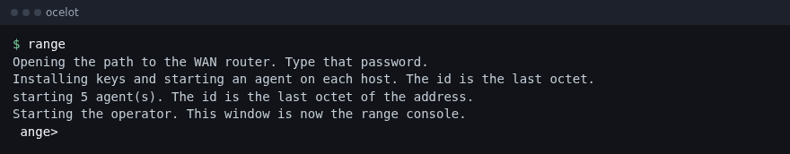
Same plant, but that address is left alone. Repeat the flag, or separate addresses with commas. The line Extra plant arguments means this copy of range accepted the flag. If that line is missing, the script on ocelot is old.
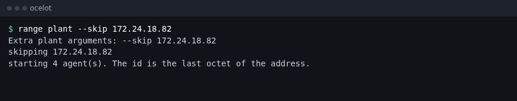
A second terminal. Shows who is logged in on the focused hosts. This is not the agent list. Routers can appear here. Agents appear only in sessions.
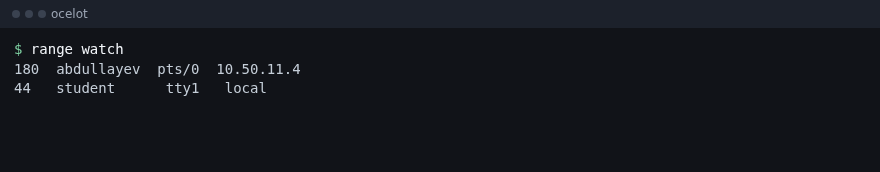
Checks TCP, HTTP, DNS, MQTT, and WebSocket on this machine, prints PASS, and exits. It does not start the operator. ICMP is skipped unless the shell can open a raw socket.
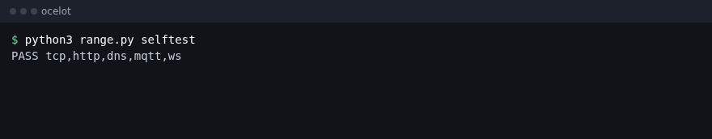
Lists agents that have called in. up means the channel is alive. TCP, WebSocket, and MQTT stay listed while the socket is up. A blank list means no agent has checked in yet.
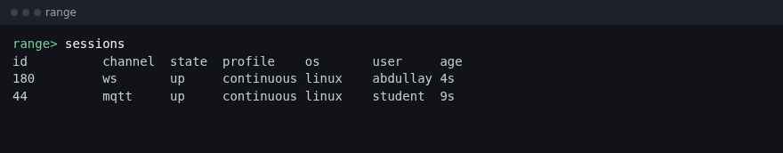
Prints the ports this operator is listening on, and the DNS zone. Class ports are 443, 80, and 53. MQTT is 1883. WebSocket is 8070.
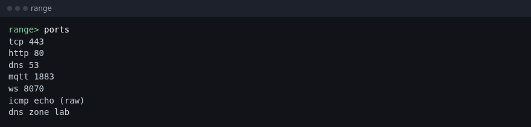
Selects one agent. The prompt becomes range 180>. Later commands go to that host only. A plain command, such as hostname, runs in bash on Linux and PowerShell on Windows. cd sticks for the next command.
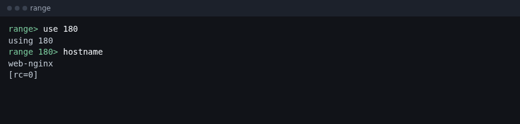
Clears the selection. The prompt returns to range>.
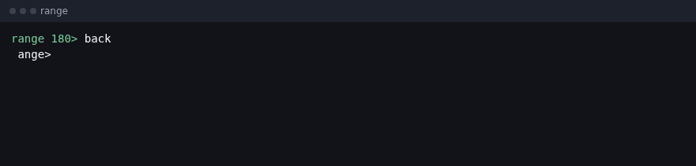
continuous is the class. TCP, WebSocket, and MQTT stay connected either way, so a command lands as soon as you type it. HTTP, DNS, and ICMP ask about once a second. off stops that beacon. Those three look again in about half an hour, which is how you turn them back on without a login. live means continuous. Do not use hunt.
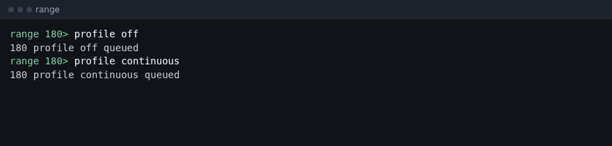
Runs one command on every agent that is up. Routers do not answer. A host you skipped at plant does not answer.
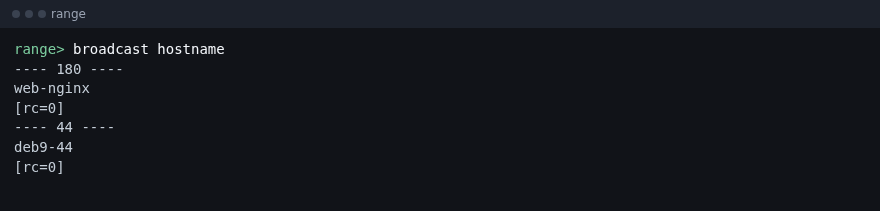
Anything that is not a built-in word is sent to the selected agent. You must use a host first. [rc=0] means the command exited cleanly.
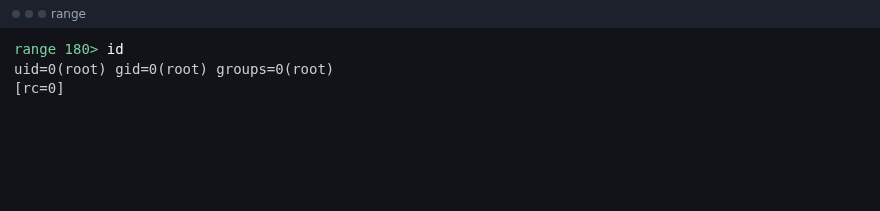
One command at a time. The working directory sticks. nano will not work, because there is no terminal. exit returns to range> and does not stop the operator.
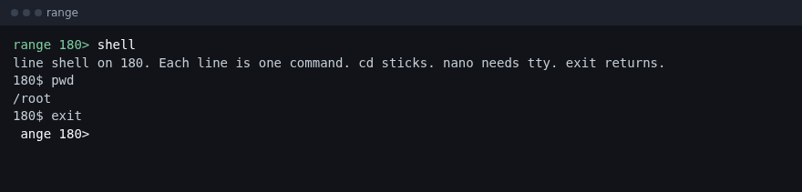
A real bash on the guest. nano and vi work. Type .quit and press Enter to leave. ~~ and Enter also leaves. Ctrl-C goes to the guest, not to Range. Use TCP, WebSocket, or MQTT. On DNS, HTTP, or ICMP the same terminal exists, but it redraws slowly.
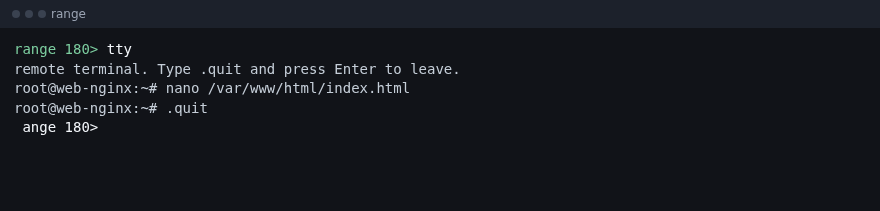
Copies a file from the guest to ocelot. If you omit the local name, it uses the file's basename in the current directory. Refuses a file over 8MB.
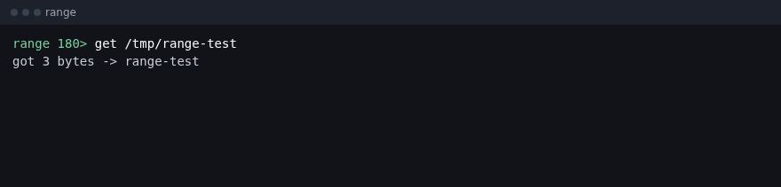
Copies a local file onto the guest. The remote path must start with /. It clears the immutable bit first, so you can replace a locked page. Prefer TCP, WebSocket, or MQTT for anything large. The limit is 1.5MB.
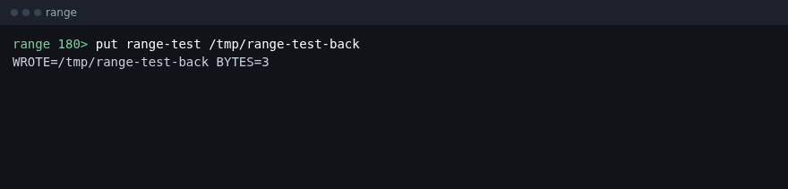
Run play snapshot before a practice deface. play revert puts that copy back. play undo puts back the copy taken by the last deface, which is a different file.
Shows the web root, the file mode, the owner, the lock bits from lsattr, and the top of index.html. It does not change the host.
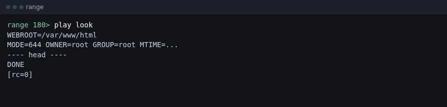
Saves the live page and any images next to it under /var/lib/.hold/site/. This is the copy play revert uses.
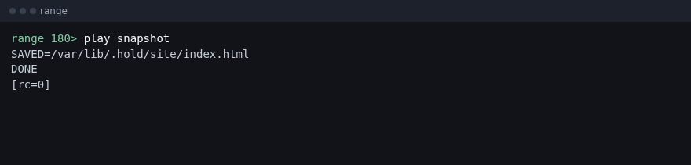
Replaces index.html with the page from the kit and locks it. On Linux the lock is chattr +i. Editing then returns "Operation not permitted". The image is written beside the page and locked with it. A copy of the previous page is kept outside the site. nobackup skips that copy.
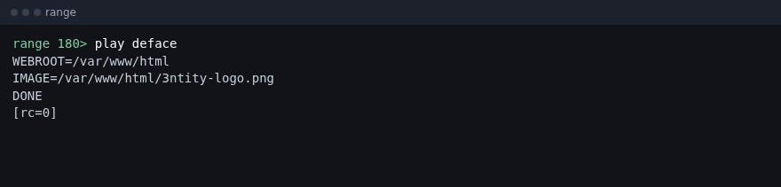
Clears the lock and puts back the copy taken by the last deface. If there is no copy, it writes a plain index. This is not the snapshot.
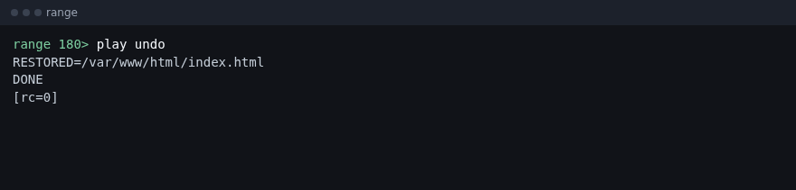
Clears the lock and puts back the snapshot from before the practice deface. Use this after a drill. NO_SNAPSHOT means you did not run play snapshot first.
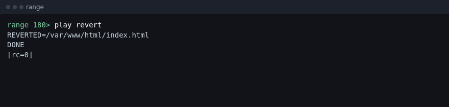
Shows that user's bash history and the lines that look like hunting. With no user, it shows root. A user who has never logged in has no history file. That is not an error.
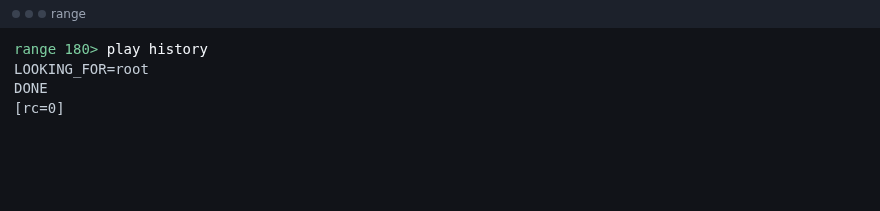
Erases that user's history files and root's history files. The home comes from passwd. backup lives in /var/backups, not /home/backup. ABSENT means the file was never there.
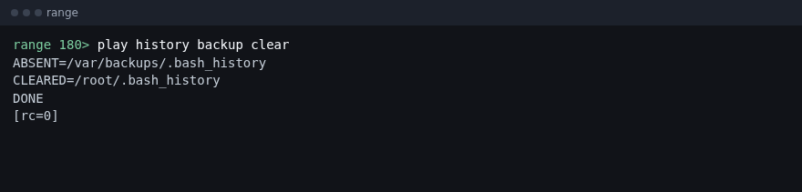
Sends the rest of the line to every terminal on that host. WALL=nobanner means it used wall -n, so the students do not see a banner with your account. The words after wall are the message. They are not a username.
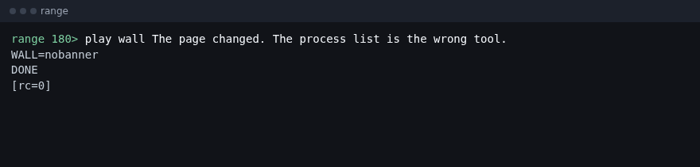
Runs touch -r so the files the plays changed match the time of a system file. The default reference is /bin/ls. With no path, it stamps the files Range already touched.
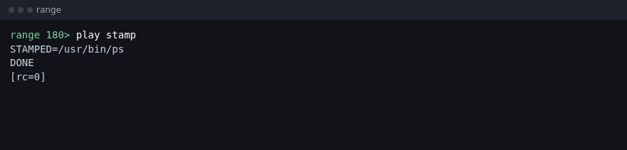
The name must be mail, games, news, or backup. On Debian these already exist. The play sets a login shell, adds the account to sudo, and sets a shadow hash. The password is printed only on this console. It is not in the tasking the students can read. backup's home is /var/backups.
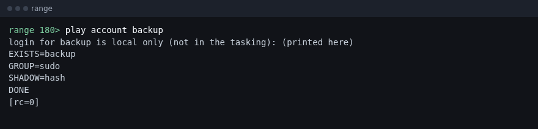
Copies bash over false and nologin, and keeps the originals in /var/lib/.hold. A user whose shell is nologin can still get a shell. SAME_FILE means that path was already the same file, which is normal when /bin is a link to /usr/bin.
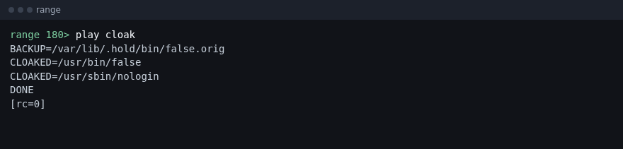
Puts false and nologin back from the hold directory. After this, file on those paths should not say they are bash. Run play cloak again only if that host should keep the puzzle for class.
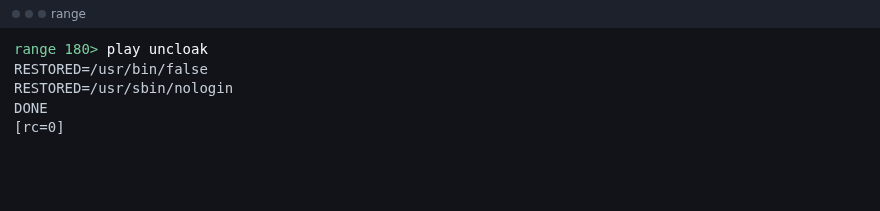
Wraps ps, ss, netstat, w, and who. Their output hides that account, the short ps form (abdulla+), the short netstat form (abdulla), the agent name, the hold path, and the attacker address. Ordinary services stay. cupsd is not hidden. htop, top, and last are not wrapped. Running it again is safe. The originals stay in /var/lib/.hold/bin/.
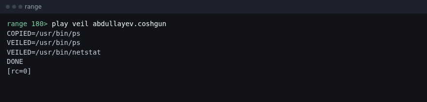
Puts those five binaries back. w on Debian 9 is rebuilt from who and ps if the original binary was already gone.
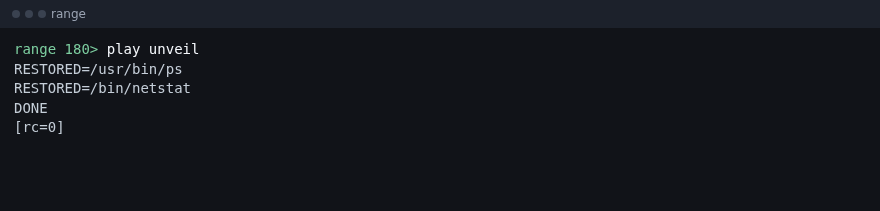
Changes only the shell field in /etc/passwd to vi, python, perl, or bash. It does not replace nologin. That is play cloak. You do not need this play for the class.
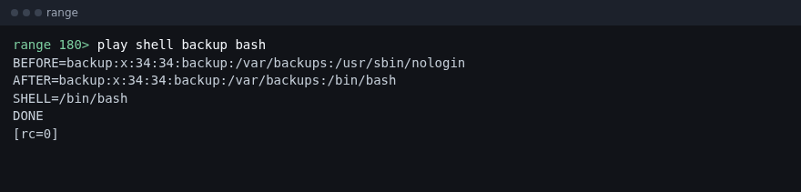
These change the host the students will see. Do not run them during the exercise unless that is the point of the hour.
Installs mailq-local.service so the agent starts again after a reboot. PERSIST=cron means that host has no systemd and a cron entry was used instead.
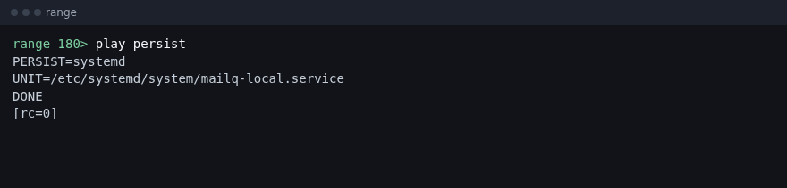
Removes that service. Safe to run if you never persisted. The line is UNPERSIST=done.
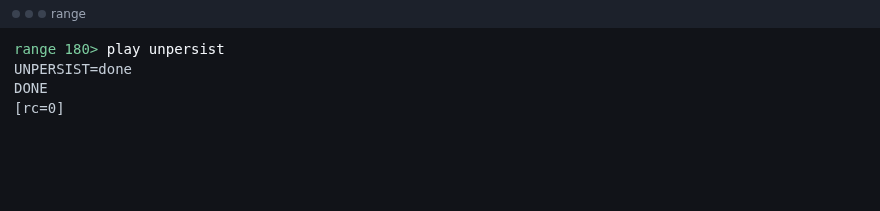
Logs that user off this host. It refuses root. The student loses the session they are working in.
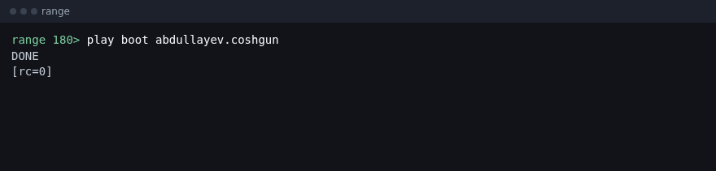
Empties auth, syslog, nginx, apache, wtmp, btmp, lastlog, and the journal. The files stay, and they are empty, which is the point. Bash history is left so you can still read what the students hunted. play logs all wipes that history too. On Windows this clears Application, System, Security, and PowerShell.
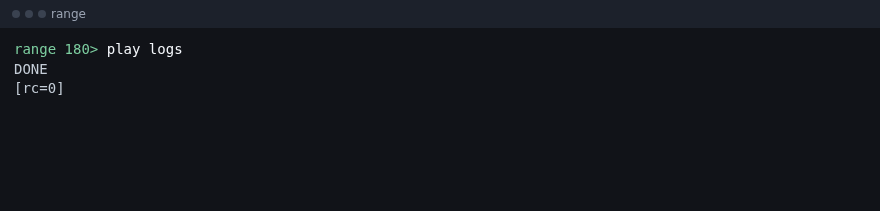
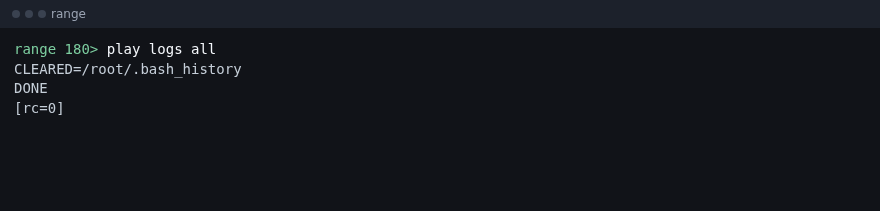
Stops the operator. The listeners close, and ordinary pings to ocelot work again. Agents keep running on the guests until the VM is rebuilt or you stop them. quit is the same command.
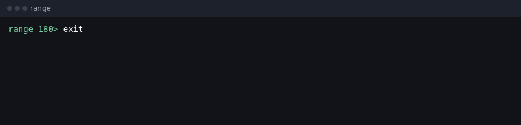